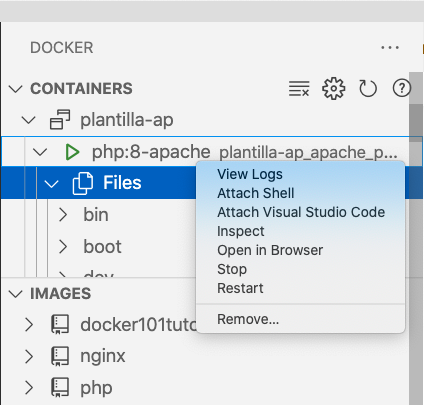
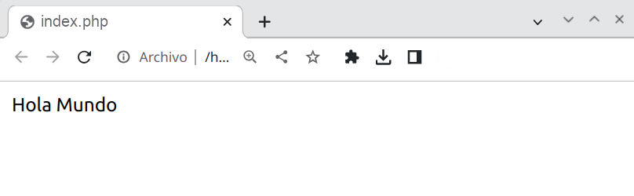

Puesta en marcha
- Para poder trabajar con un entorno de desarrollo local, hemos de preparar nuestro entorno de desarrollo con las herramientas comentadas. A lo largo del curso vamos a utilizar la versión 8 de PHP.
XAMPP
XAMPP ( https://www.apachefriends.org/es/index.html) es una distribución compuesta con el software necesario para desarrollar en entorno servidor. Se compone de las siguientes herramientas en base a sus siglas:
- X para el sistema operativo (de ahí que se conozca también como LAMP o WAMP).
- A para Apache.
- M para MySQL / MariaDB. También incluye phpMyAdmin para la administración de la base de datos desde un interfaz web.
- P para PHP.
- P para Perl.
Desde la propia página se puede descargar el archivo ejecutable para el sistema operativo de nuestro ordenador. Se recomienda leer la FAQ de cada sistema operativo con instrucciones para su puesta en marcha.
XAMPP en Windows
Si vas a trabajar con tu propio ordenador, XAMPP es una solución más sencilla que Docker, sobre todo si trabajar con Windows como sistema operativo.
Docker
Docker (https://www.docker.com) es un gestor de contenedores; considerando un contenedor como un método de virtualización del sistema operativo.
El uso de contenedores requiere menos recursos que una máquina virtual, por lo tanto, su lanzamiento y detención son más rápidos que las máquinas virtuales.
Así pues, Docker permite crear, probar e implementar aplicaciones rápidamente, a partir de una serie de plantillas que se conocen como imágenes de Docker.
Para ello es necesario tener instalado Docker Desktop ( https://www.docker.com/products/docker-desktop ) en nuestros entornos de desarrollo (el cual ya incluye en núcleo de Docker y la herramienta Docker Compose). En los ordenadores del aula ya está instalado (o se instalará en alguna sesión). Para instalarlo en casa, en el caso de Windows, es necesario instalar previamente WSL2, el cual es un subsistema de Linux dentro de Windows.
A lo largo del curso iremos creando diferentes contenedores con los servicios necesarios, de manera que cada vez sólo trabajemos con el software mínimo.
Versiones
A lo largo del curso vamos a usar PHP 8.0.
Respecto a Docker, para escribir los apuntes hemos utilizado la version 20.10 y en Docker Compose la version 2.19.
Finalmente, la versión de Docker Desktop que hemos utilizado es la 4.0.
Plantilla Servidor Web + PHP
Docker se basa en el uso de imágenes para crear contenedores. Docker Compose simplifica el trabajo con múltiples contenedores, y por ello, para facilitar el arranque, nos centraremos en Docker Compose utilizando una plantilla que únicamente va a contener como servicios Apache/Nginx y PHP.
Para ello, vamos a rellenar el archivo docker-compose.yaml con:
Apache y PHP:
| Bash | |
|---|---|
Nginx y PHP:
Dentro de la carpeta que contenga dicho archivo, hemos de crear una carpeta src donde colocaremos nuestro código fuente. Para facilitar la puesta en marcha, tenéis la plantilla de Apache/PHP (versión 2 con a2enmod rewrite) o Nginx/PHP disponible para su descarga.
Cuando estemos listos, lanzaremos el servicio mediante:
| Bash | |
|---|---|
Si queremos ver el contenido de los archivos de *log* del servicio utilizaremos:
| Bash | |
|---|---|
Para copiar un archivo desde nuestro sistema al interior del contenedor:
| Bash | |
|---|---|
Y al revés, si queremos consultar un archivo contenido dentro de un contenedor, lo copiaremos a nuestro sistema:
| Bash | |
|---|---|
Finalmente, si queremos acceder a un terminal interactivo dentro del contenedor:
| Bash | |
|---|---|
Otros comandos que podemos llegar a utilizar son:
docker ps: Ver los contenedores que se estan ejecutando.docker ps -a: Ver todos los contenedores.docker start nombreContenedor: Arrancar un contenedor.docker images: Ver las imágenes que tenemos descargadas.
Otra forma más sencilla para lanzar de nuevo los contenedores y gestionarlos una vez creados es utilizar el interfaz gráfico que ofrece Docker Desktop:

Docker stack
Existen diversas opciones mediante Docker que ofrecen soluciones completas y empaquetadas para todo el stack de desarrollo. En posteriores sesiones utilizaremos tanto Devilbox (http://devilbox.org) como Laradock (https://laradock.io).
... pero quiero saber cómo funciona ...
En el módulo de Despliegue de aplicaciones estudiaréis en profundidad, además de Docker, Apache y otros servicios que nos servirán de ayuda para el desarrollo en entorno servidor.
Entorno de desarrollo
En este curso vamos a emplear Visual Studio Code (https://code.visualstudio.com) como entorno de desarrollo (IDE). Existen otras alternativas, siendo PhpStorm la más conocida (pero de pago). Otra posibilidad es utilizar Eclipse, aunque es un entorno bastante pesado.
VSCode es un editor de código fuente que se complementa mediante extensiones. Para facilitar el trabajo a lo largo del curso vamos a utilizar las siguientes extensiones:
- PHP
- PHP Debug
- PHP Intelephense
- Docker
En la siguiente sesión comenzaremos a utilizar Intelephense pero en esta sesión nos vamos a centrar en Docker (más adelante instalaremos nuevas extensiones).
Por ejemplo, si abrimos la extensión de Docker, podréis visualizar tanto los contenedores como las imágenes de vuestro sistema. Desde cada contenedor, mediante clic derecho, podemos iniciar/detener/reiniciar cada contenedor, así como ver su contenido o abrir un terminal dentro del mismo:

Configurar llaves PHP en VS Code
Ir a Archivo/Preferencias/Configurar fragmentos de usuario (File/Preferences/User Snippets) seleccionar la opción html y agregar el snippet en el fichero html.json:
| Bash | |
|---|---|
A partir de ahora podremos abreviar la introducción de código en VS Code introduciendo php + TAB.
Hola Mundo
Y como no, nuestro primer ejemplo será un Hola Mundo en PHP.
Si nombramos el archivo como index.php, al acceder a http://localhost automáticamente cargará el resultado:
| Text Only | |
|---|---|
